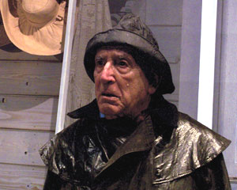

Sul lago dorato
di Ernest Thompson
con Arnoldo Foà e Erica Blanc
e con Loredana Giordano, Valerio Santoro
regia Maurizio Panici
|  |
Arnoldo Foà ed Erica Blanc sono gli interpreti d'eccezione di questa commedia sentimentale di Ernest Thompson, resa famosa dall'omonimo film di Mark Ridell del 1981 con Katherine Hepburn ed Heny Fonda, vincitore di tre premi Oscar. Norman e la moglie Ethel, coniugi ottantenni, da anni trascorrono le vacanze estive nel loro cottage su un lago del New England. Dopo anni di assenza e lontananza li raggiunge la figlia Chelsea, che arriva in compagnia del nuovo fidanzato e del figlio di lui, un tredicenne irrispettoso e ribelle. Tra il vecchio e il bambino, dopo le schermaglie iniziali e l’immancabile conflitto generazionale , nasce un grande affetto che continuerà ben oltre quell’estate. E' una storia capace di farci appassionare e riflettere, un affettuoso sguardo verso tre generazioni diverse, mondi distanti capaci di ritrovarsi al di là delle convenzioni sociali e dell'età, una commedia di sentimenti a cui tanto cinema si è ispirato e che ha fatto sognare tantissimi spettatori.